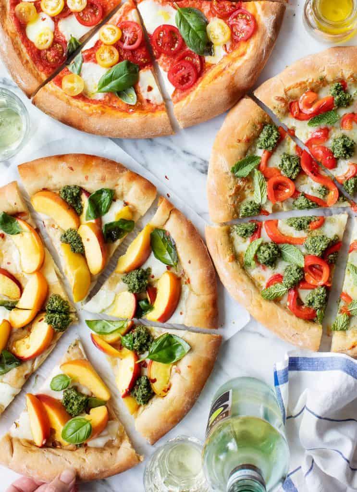

Pasta Salad

Ingredients:
- Pizza dough
- ½ heaping cup pizza sauce
- 8 ounces fresh bocconcini mozzarella, sliced
- ½ cup sliced cherry tomatoes
- 10 basil leaves
- Pinch red pepper flakes
- Extra-virgin olive oil, for drizzling
Instructions
- Preheat the oven to 500°F.
- Spread the pizza sauce onto the dough. Top with the fresh mozzarella and tomatoes and bake 10 to 12 minutes, or until the crust is browned. Remove from the oven and top with fresh basil leaves and a pinch of red pepper flakes. Drizzle with olive oil and serve.